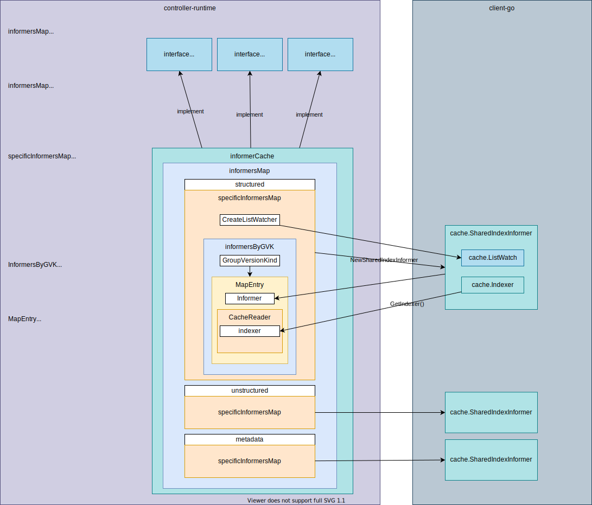

cache


- So-called "Cache" in stored in cluster is informerCache.
- informerCache implements Cache, Informers, and client.Reader interfaces.
- informerCache has a specificInformersMap for structured, unstructured, and metadata.
- What is structured, unstructured. and metadata? ref: Unstructured, Caching unstrctured objects using controller-runtime
- specificInformersMap has several fields but the most important field is informersByGVK.
- informersByGVK, as the variable name indicates, is a map from GroupVersionKind to MapEntry
- MapEntry is a pair of
cache.SharedIndexInformerandCacheReader - NewSharedIndexInformer requires
lw ListerWatcher, exampleObject runtime.Object, defaultEventHandlerResyncPeriod time.Duration, indexers Indexers. Those functions usek8s.io/client-go/metadata,k8s.io/client-go/dynamic, andk8s.io/client-go/restto getListFuncandWatchFuncthat are necessary to generate [cache.ListWatch]- In controller-runtime,
ListerWatcheris created bycreateListWatcherwhich is passed tonewSpecificInformersMap. Specifically, createStructuredListWatch, createUnstructuredListWatch, createMetadataListWatch - In controller-runtime,
Indexersis generated as follows:cache.Indexers{ cache.NamespaceIndex: cache.MetaNamespaceIndexFunc, }
- In controller-runtime,
Types
Cache interface
// Cache knows how to load Kubernetes objects, fetch informers to request
// to receive events for Kubernetes objects (at a low-level),
// and add indices to fields on the objects stored in the cache.
type Cache interface {
// Cache acts as a client to objects stored in the cache.
client.Reader
// Cache loads informers and adds field indices.
Informers
}
Informers interface
// Informers knows how to create or fetch informers for different
// group-version-kinds, and add indices to those informers. It's safe to call
// GetInformer from multiple threads.
type Informers interface {
// GetInformer fetches or constructs an informer for the given object that corresponds to a single
// API kind and resource.
GetInformer(ctx context.Context, obj client.Object) (Informer, error)
// GetInformerForKind is similar to GetInformer, except that it takes a group-version-kind, instead
// of the underlying object.
GetInformerForKind(ctx context.Context, gvk schema.GroupVersionKind) (Informer, error)
// Start runs all the informers known to this cache until the context is closed.
// It blocks.
Start(ctx context.Context) error
// WaitForCacheSync waits for all the caches to sync. Returns false if it could not sync a cache.
WaitForCacheSync(ctx context.Context) bool
// Informers knows how to add indices to the caches (informers) that it manages.
client.FieldIndexer
}
Informer interface
// Informer - informer allows you interact with the underlying informer.
type Informer interface {
// AddEventHandler adds an event handler to the shared informer using the shared informer's resync
// period. Events to a single handler are delivered sequentially, but there is no coordination
// between different handlers.
AddEventHandler(handler toolscache.ResourceEventHandler)
// AddEventHandlerWithResyncPeriod adds an event handler to the shared informer using the
// specified resync period. Events to a single handler are delivered sequentially, but there is
// no coordination between different handlers.
AddEventHandlerWithResyncPeriod(handler toolscache.ResourceEventHandler, resyncPeriod time.Duration)
// AddIndexers adds more indexers to this store. If you call this after you already have data
// in the store, the results are undefined.
AddIndexers(indexers toolscache.Indexers) error
// HasSynced return true if the informers underlying store has synced.
HasSynced() bool
}
informerCache
New
- Cache.New initializes and returns informerCache.
im := internal.NewInformersMap(config, opts.Scheme, opts.Mapper, *opts.Resync, opts.Namespace, selectorsByGVK, disableDeepCopyByGVK, transformByGVK) return &informerCache{InformersMap: im}, nildisableDeepCopyByGVKis determined fromopts:disableDeepCopyByGVK, err := convertToDisableDeepCopyByGVK(opts.UnsafeDisableDeepCopyByObject, opts.Scheme)- The returned value is the following type:
type DisableDeepCopyByGVK map[schema.GroupVersionKind]bool - Default value is empty:
internal.DisableDeepCopyByGVK{}
- informerCache
type informerCache struct { *internal.InformersMap } -
type InformersMap struct { // we abstract over the details of structured/unstructured/metadata with the specificInformerMaps // TODO(directxman12): genericize this over different projections now that we have 3 different maps structured *specificInformersMap unstructured *specificInformersMap metadata *specificInformersMap // Scheme maps runtime.Objects to GroupVersionKinds Scheme *runtime.Scheme }Initialized with NewInformersMap:
1. All newXXXInformersMap calls specificInformersMap:&InformersMap{ structured: newStructuredInformersMap(config, scheme, mapper, resync, namespace, selectors, disableDeepCopy, transformers), unstructured: newUnstructuredInformersMap(config, scheme, mapper, resync, namespace, selectors, disableDeepCopy, transformers), metadata: newMetadataInformersMap(config, scheme, mapper, resync, namespace, selectors, disableDeepCopy, transformers), Scheme: scheme, }1. specificInformersMap Initialized with newSpecificInformersMap// newStructuredInformersMap creates a new InformersMap for structured objects. func newStructuredInformersMap(config *rest.Config, scheme *runtime.Scheme, mapper meta.RESTMapper, resync time.Duration, namespace string, selectors SelectorsByGVK, disableDeepCopy DisableDeepCopyByGVK, transformers TransformFuncByObject) *specificInformersMap { return newSpecificInformersMap(config, scheme, mapper, resync, namespace, selectors, disableDeepCopy, transformers, createStructuredListWatch) } // newUnstructuredInformersMap creates a new InformersMap for unstructured objects. func newUnstructuredInformersMap(config *rest.Config, scheme *runtime.Scheme, mapper meta.RESTMapper, resync time.Duration, namespace string, selectors SelectorsByGVK, disableDeepCopy DisableDeepCopyByGVK, transformers TransformFuncByObject) *specificInformersMap { return newSpecificInformersMap(config, scheme, mapper, resync, namespace, selectors, disableDeepCopy, transformers, createUnstructuredListWatch) } // newMetadataInformersMap creates a new InformersMap for metadata-only objects. func newMetadataInformersMap(config *rest.Config, scheme *runtime.Scheme, mapper meta.RESTMapper, resync time.Duration, namespace string, selectors SelectorsByGVK, disableDeepCopy DisableDeepCopyByGVK, transformers TransformFuncByObject) *specificInformersMap { return newSpecificInformersMap(config, scheme, mapper, resync, namespace, selectors, disableDeepCopy, transformers, createMetadataListWatch) }ip := &specificInformersMap{ config: config, Scheme: scheme, mapper: mapper, informersByGVK: make(map[schema.GroupVersionKind]*MapEntry), codecs: serializer.NewCodecFactory(scheme), paramCodec: runtime.NewParameterCodec(scheme), resync: resync, startWait: make(chan struct{}), createListWatcher: createListWatcher, namespace: namespace, selectors: selectors.forGVK, disableDeepCopy: disableDeepCopy, transformers: transformers, } -
1. CacheReader
// MapEntry contains the cached data for an Informer. type MapEntry struct { // Informer is the cached informer Informer cache.SharedIndexInformer // CacheReader wraps Informer and implements the CacheReader interface for a single type Reader CacheReader }1.// CacheReader wraps a cache.Index to implement the client.CacheReader interface for a single type. type CacheReader struct { // indexer is the underlying indexer wrapped by this cache. indexer cache.Indexer // groupVersionKind is the group-version-kind of the resource. groupVersionKind schema.GroupVersionKind // scopeName is the scope of the resource (namespaced or cluster-scoped). scopeName apimeta.RESTScopeName // disableDeepCopy indicates not to deep copy objects during get or list objects. // Be very careful with this, when enabled you must DeepCopy any object before mutating it, // otherwise you will mutate the object in the cache. disableDeepCopy bool }MapEntryandCacheReaderis initialized in addInformerToMap:i := &MapEntry{ Informer: ni, Reader: CacheReader{ indexer: ni.GetIndexer(), groupVersionKind: gvk, scopeName: rm.Scope.Name(), disableDeepCopy: ip.disableDeepCopy.IsDisabled(gvk), }, }disableDeepCopyis determined by isDisabled() originally given fromopts.UnsafeDisableDeepCopyByObject.As you can see, if it's empty (the default value), it returns// IsDisabled returns whether a GroupVersionKind is disabled DeepCopy. func (disableByGVK DisableDeepCopyByGVK) IsDisabled(gvk schema.GroupVersionKind) bool { if d, ok := disableByGVK[gvk]; ok { return d } else if d, ok = disableByGVK[GroupVersionKindAll]; ok { return d } return false }false, which means when cacheReader gets an obejct from the cache, it internally deepcopies the object. You can modified the got object without deepcopying by yourself.
How cache is used
- Create cache.
- Start cache.
- Wait until cache is synced.
- Get informer.
- Wait until informer is synced.
Example: Get nginx Pod
Use ResourceEventHandlerFuncs (Note that this is in client-go package! not in controller-runtime!)
The informer interface is confusing in that the arguments of the informer's methods are using another cache package in client-go.
toolcache here is https://pkg.go.dev/k8s.io/client-go@v0.25.0/tools/cache
type Informer interface {
// AddEventHandler adds an event handler to the shared informer using the shared informer's resync
// period. Events to a single handler are delivered sequentially, but there is no coordination
// between different handlers.
AddEventHandler(handler toolscache.ResourceEventHandler)
// AddEventHandlerWithResyncPeriod adds an event handler to the shared informer using the
// specified resync period. Events to a single handler are delivered sequentially, but there is
// no coordination between different handlers.
AddEventHandlerWithResyncPeriod(handler toolscache.ResourceEventHandler, resyncPeriod time.Duration)
// AddIndexers adds more indexers to this store. If you call this after you already have data
// in the store, the results are undefined.
AddIndexers(indexers toolscache.Indexers) error
// HasSynced return true if the informers underlying store has synced.
HasSynced() bool
}
type ResourceEventHandler interface {
OnAdd(obj interface{})
OnUpdate(oldObj, newObj interface{})
OnDelete(obj interface{})
}
- Run nginx pod
kubectl run nginx --image=nginx -
Run
go run main.go1. Create/Delete nginx pod. You'll see the object in the logs.cache is started cache is synced &Pod{ObjectMeta:{nginx default 36f44710-c965-4b02-8fb5-05b0948104fa 190616 0 2022-09-15 07:14:46 +0900 JST <nil> <nil> map[run:nginx] map[] [] [] [{kubectl-run Update v1 2022-09-15 07:14:46 +0900 JST FieldsV1 {"f:metadata":{"f:labels":{".":{},"f:run":{}}},"f:spec":{"f:containers":{"k:{\"name\":\"nginx\"}":{".":{},"f:image":{},"f:imagePullPolicy":{},"f:name":{},"f:resources":{},"f:terminationMessagePath":{},"f:terminationMessagePolicy":{}}},"f:dnsPolicy":{},"f:enableServiceLinks":{},"f:restartPolicy":{},"f:schedulerName":{},"f:securityContext":{},"f:terminationGracePeriodSeconds":{}}} } {kubelet Update v1 2022-09-15 07:14:46 +0900 JST FieldsV1 {"f:status":{"f:conditions":{"k:{\"type\":\"ContainersReady\"}":{".":{},"f:lastProbeTime":{},"f:lastTransitionTime":{},"f:message":{},"f:reason":{},"f:status":{},"f:type":{}},"k:{\"type\":\"Initialized\"}":{".":{},"f:lastProbeTime":{},"f:lastTransitionTime":{},"f:status":{},"f:type":{}},"k:{\"type\":\"Ready\"}":{".":{},"f:lastProbeTime":{},"f:lastTransitionTime":{},"f:message":{},"f:reason":{},"f:status":{},"f:type":{}}},"f:containerStatuses":{},"f:hostIP":{},"f:startTime":{}}} status}]},Spec:PodSpec{Volumes:[]Volume{Volume{Name:kube-api-access-h8flt,VolumeSource:VolumeSource{HostPath:nil,EmptyDir:nil,GCEPersistentDisk:nil,AWSElasticBlockStore:nil,GitRepo:nil,Secret:nil,NFS:nil,ISCSI:nil,Glusterfs:nil,PersistentVolumeClaim:nil,RBD:nil,FlexVolume:nil,Cinder:nil,CephFS:nil,Flocker:nil,DownwardAPI:nil,FC:nil,AzureFile:nil,ConfigMap:nil,VsphereVolume:nil,Quobyte:nil,AzureDisk:nil,PhotonPersistentDisk:nil,PortworxVolume:nil,ScaleIO:nil,Projected:&ProjectedVolumeSource{Sources:[]VolumeProjection{VolumeProjection{Secret:nil,DownwardAPI:nil,ConfigMap:nil,ServiceAccountToken:&ServiceAccountTokenProjection{Audience:,ExpirationSeconds:*3607,Path:token,},},VolumeProjection{Secret:nil,DownwardAPI:nil,ConfigMap:&ConfigMapProjection{LocalObjectReference:LocalObjectReference{Name:kube-root-ca.crt,},Items:[]KeyToPath{KeyToPath{Key:ca.crt,Path:ca.crt,Mode:nil,},},Optional:nil,},ServiceAccountToken:nil,},VolumeProjection{Secret:nil,DownwardAPI:&DownwardAPIProjection{Items:[]DownwardAPIVolumeFile{DownwardAPIVolumeFile{Path:namespace,FieldRef:&ObjectFieldSelector{APIVersion:v1,FieldPath:metadata.namespace,},ResourceFieldRef:nil,Mode:nil,},},},ConfigMap:nil,ServiceAccountToken:nil,},},DefaultMode:*420,},StorageOS:nil,CSI:nil,Ephemeral:nil,},},},Containers:[]Container{Container{Name:nginx,Image:nginx,Command:[],Args:[],WorkingDir:,Ports:[]ContainerPort{},Env:[]EnvVar{},Resources:ResourceRequirements{Limits:ResourceList{},Requests:ResourceList{},},VolumeMounts:[]VolumeMount{VolumeMount{Name:kube-api-access-h8flt,ReadOnly:true,MountPath:/var/run/secrets/kubernetes.io/serviceaccount,SubPath:,MountPropagation:nil,SubPathExpr:,},},LivenessProbe:nil,ReadinessProbe:nil,Lifecycle:nil,TerminationMessagePath:/dev/termination-log,ImagePullPolicy:Always,SecurityContext:nil,Stdin:false,StdinOnce:false,TTY:false,EnvFrom:[]EnvFromSource{},TerminationMessagePolicy:File,VolumeDevices:[]VolumeDevice{},StartupProbe:nil,},},RestartPolicy:Always,TerminationGracePeriodSeconds:*30,ActiveDeadlineSeconds:nil,DNSPolicy:ClusterFirst,NodeSelector:map[string]string{},ServiceAccountName:default,DeprecatedServiceAccount:default,NodeName:kind-control-plane,HostNetwork:false,HostPID:false,HostIPC:false,SecurityContext:&PodSecurityContext{SELinuxOptions:nil,RunAsUser:nil,RunAsNonRoot:nil,SupplementalGroups:[],FSGroup:nil,RunAsGroup:nil,Sysctls:[]Sysctl{},WindowsOptions:nil,FSGroupChangePolicy:nil,SeccompProfile:nil,},ImagePullSecrets:[]LocalObjectReference{},Hostname:,Subdomain:,Affinity:nil,SchedulerName:default-scheduler,InitContainers:[]Container{},AutomountServiceAccountToken:nil,Tolerations:[]Toleration{Toleration{Key:node.kubernetes.io/not-ready,Operator:Exists,Value:,Effect:NoExecute,TolerationSeconds:*300,},Toleration{Key:node.kubernetes.io/unreachable,Operator:Exists,Value:,Effect:NoExecute,TolerationSeconds:*300,},},HostAliases:[]HostAlias{},PriorityClassName:,Priority:*0,DNSConfig:nil,ShareProcessNamespace:nil,ReadinessGates:[]PodReadinessGate{},RuntimeClassName:nil,EnableServiceLinks:*true,PreemptionPolicy:*PreemptLowerPriority,Overhead:ResourceList{},TopologySpreadConstraints:[]TopologySpreadConstraint{},EphemeralContainers:[]EphemeralContainer{},SetHostnameAsFQDN:nil,OS:nil,HostUsers:nil,},Status:PodStatus{Phase:Pending,Conditions:[]PodCondition{PodCondition{Type:Initialized,Status:True,LastProbeTime:0001-01-01 00:00:00 +0000 UTC,LastTransitionTime:2022-09-15 07:14:46 +0900 JST,Reason:,Message:,},PodCondition{Type:Ready,Status:False,LastProbeTime:0001-01-01 00:00:00 +0000 UTC,LastTransitionTime:2022-09-15 07:14:46 +0900 JST,Reason:ContainersNotReady,Message:containers with unready status: [nginx],},PodCondition{Type:ContainersReady,Status:False,LastProbeTime:0001-01-01 00:00:00 +0000 UTC,LastTransitionTime:2022-09-15 07:14:46 +0900 JST,Reason:ContainersNotReady,Message:containers with unready status: [nginx],},PodCondition{Type:PodScheduled,Status:True,LastProbeTime:0001-01-01 00:00:00 +0000 UTC,LastTransitionTime:2022-09-15 07:14:46 +0900 JST,Reason:,Message:,},},Message:,Reason:,HostIP:172.18.0.2,PodIP:,StartTime:2022-09-15 07:14:46 +0900 JST,ContainerStatuses:[]ContainerStatus{ContainerStatus{Name:nginx,State:ContainerState{Waiting:&ContainerStateWaiting{Reason:ContainerCreating,Message:,},Running:nil,Terminated:nil,},LastTerminationState:ContainerState{Waiting:nil,Running:nil,Terminated:nil,},Ready:false,RestartCount:0,Image:nginx,ImageID:,ContainerID:,Started:*false,},},QOSClass:BestEffort,InitContainerStatuses:[]ContainerStatus{},NominatedNodeName:,PodIPs:[]PodIP{},EphemeralContainerStatuses:[]ContainerStatus{},},}